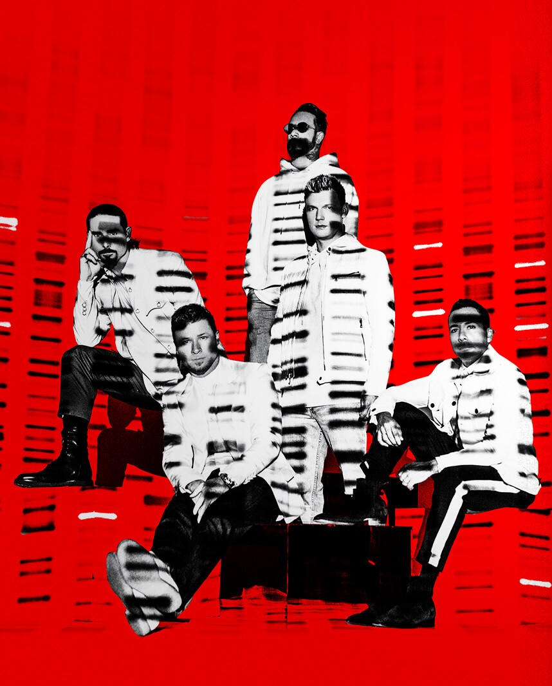

ASSINE NOSSA PETIÇÃO!
Esta página é dedicada a trazer os Backstreet Boys de volta ao nordeste do Brasil, especialmente ao Recife.
www.change.org/bsbdnanordeste
Esta página é dedicada a trazer os Backstreet Boys de volta ao nordeste do Brasil, especialmente ao Recife.
www.change.org/bsbdnanordeste
Somos fãs do grupo Backstreet Boys e queremos trazê-los de volta ao Nordeste (Recife) do Brasil para a apresentação do show da DNA World Tour.
Vimos, por meio do link apresentado, solicitar que considerem a contratação de um show extra do referido grupo na Região Nordeste do país.
Na tarde do dia 14 de março de 2020, a Produtora de Eventos e a empresa Ingresso Rápido comunicaram o adiamento do show do grupo americano que estava agendado para a data de 15/03/2020. Sabendo que a nova data do show (27/01/2023) foi divulgada e que na agenda do grupo Backstreet Boys possui espaço suficiente para adicionar show extra, solicitamos que a nossa situação, enquanto residentes da região Nordeste, seja ponderada no que diz respeito aos seguintes quesitos:
Número de ingressos vendidos aos fãs provenientes dos Estados das regiões Norte e Nordeste (que pode ser comprovado em banco de dados próprio, referente às vendas de ingresso);
Prejuízos financeiros que a maioria dos referidos fãs tiveram com a compra de passagens aéreas, deslocamento local, reserva de hotel e gastos com alimentação;
Manejos necessários no ambiente de trabalho para obter as dispensas junto aos empregadores e os possíveis prejuízos para obtenção de dispensas futuras;
Danos emocionais, no que diz respeito às frustrações vivenciadas durante a semana que antecedera o evento, uma vez que fora veiculado o cancelamento do show nas mídias sociais, porém, a organização do evento (ainda na manhã do dia 14/03/2020) informou que o mesmo aconteceria normalmente;
Riscos à saúde a que os fãs se submeteram para comparecer ao evento e prestigiar os seus ídolos;
Sabe-se que, nas duas turnês anteriores (2011 e 2015), o grupo se apresentou na cidade do Recife, na mesma casa de show (Classic Hall) com público expressivo, tendo em vista a capacidade do local de quase 15 mil pagantes. Além desta casa de show, a cidade dispõe de outros espaços para eventos com capacidades maiores. Assim, a cidade possui estrutura física adequada para receber artistas e eventos de grande magnitude como a turnê “DNA”, não deixando a desejar quando comparada às estruturas das casas de shows por onde a referida turnê passou desde o seu início.
Esperamos que julguem o nosso pedido de maneira positiva. Ao atender este apelo, a Produtora de Eventos viabilizaria não somente o comparecimento dos fãs que se sentiram prejudicados com o ocorrido na ocasião do adiamento do show de São Paulo, mas também possibilitaria a realização do sonho de tantos outros que não tiveram condições financeiras ou a dispensa necessária para viajar.
Ressaltamos o reconhecimento de que a atitude da Produtora foi assertiva e adequada em função da Pandemia do COVID-19. No entanto, todos os prejuízos mencionados previamente teriam sido minimizados caso a decisão do adiamento do show tivesse ocorrido em momento mais oportuno, anterior ao dia 14/03/2020.